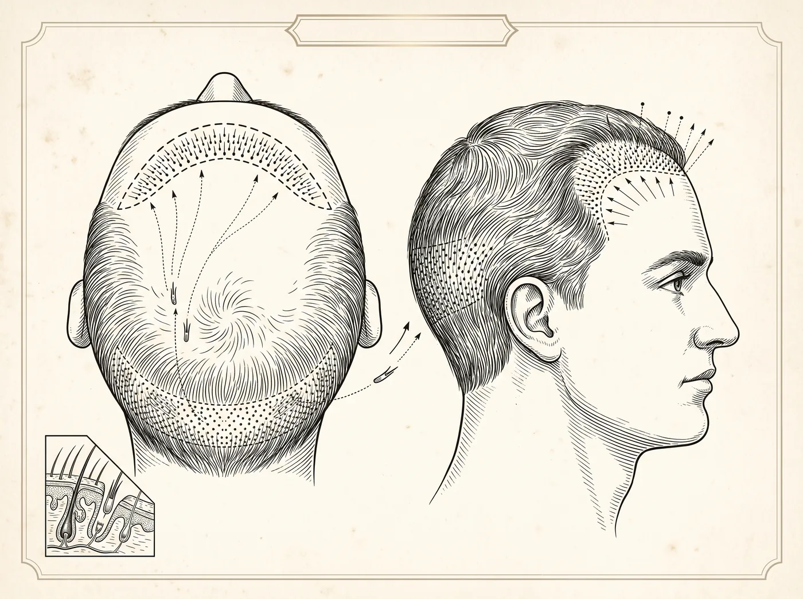

Capilar · Procedimento cirúrgico
O transplante capilar restaura os fios em áreas de calvície ou rarefação, transferindo folículos de regiões doadoras mais densas para as áreas afetadas. Na técnica FUE, as unidades foliculares são extraídas individualmente, sem remoção de faixa de couro cabeludo. Indicado para homens e mulheres, após investigação da causa da queda.

Objetivos do procedimento
Todo procedimento cirúrgico envolve riscos. A avaliação individual com um cirurgião plástico é indispensável para indicar o tratamento adequado a cada caso.
Entenda o procedimento
Na extração de unidades foliculares (FUE), o transplante é organizado em torno dos agrupamentos naturais de fios — as unidades foliculares —, que são retiradas individualmente de uma área doadora, em geral na parte posterior e nas laterais da cabeça, onde os folículos tendem a ser mais resistentes à ação hormonal que provoca a queda de padrão. Essas unidades são preservadas e, em seguida, implantadas na região a ser tratada, respeitando o ângulo, o sentido e a distribuição natural dos fios. Como não há retirada de uma faixa de couro cabeludo, a área doadora não recebe um corte linear.
O transplante é um trabalho minucioso, em que o planejamento da nova linha frontal, do sentido dos fios e da distribuição pesa tanto quanto a extração e o implante em si. A quantidade de unidades foliculares e o número de sessões variam conforme a extensão da área, as características do couro cabeludo e os objetivos de cada pessoa. Esses detalhes, assim como o passo a passo e os cuidados de cada etapa, são definidos na avaliação médica, caso a caso.
Além do transplante capilar, o Hospital Espaço da Plástica realiza o transplante de sobrancelha, procedimento bastante procurado por mulheres. A rarefação ou a perda de pelos na sobrancelha pode ter várias origens — depilação repetida ao longo dos anos, condições que afetam os pelos, alterações hormonais, traumas ou cicatrizes —, e nem toda situação tem indicação cirúrgica. Assim como no couro cabeludo, a técnica parte de unidades foliculares retiradas da própria pessoa, em geral da região posterior da cabeça, preparadas como enxertos de fio único, mais compatíveis com a delicadeza da sobrancelha.
A diferença está no refinamento: cada folículo é implantado em ângulo bem rasante à pele e no sentido próprio de cada trecho da sobrancelha, que muda da cabeça ao arco e à cauda. A densidade é construída de forma gradual, com o objetivo de acompanhar o desenho natural da região, mais suave no início e um pouco mais cheia no corpo. Como os fios têm origem no couro cabeludo, mantêm o ritmo de crescimento de sua área de origem e tendem a crescer mais do que um pelo comum de sobrancelha, o que costuma exigir aparo periódico. O desenho pretendido, esses cuidados e o que a técnica pode ou não propor em cada situação são definidos na avaliação individual.
No transplante capilar, a causa mais comum de queda no público masculino é a calvície de padrão androgenético, que costuma se manifestar como recuo da linha frontal e rarefação no topo ou na coroa — motivo pelo qual esse procedimento é mais buscado por homens. Ainda assim, mulheres também podem ser candidatas ao transplante capilar em situações específicas, sempre após a investigação da origem da queda. O transplante capilar tende a ser considerado quando a perda está estabilizada ou sob controle clínico, quando há área doadora adequada e quando as expectativas estão alinhadas ao que a avaliação indica.
O transplante de sobrancelha, por sua vez, é mais procurado por mulheres, com frequência associado à rarefação por depilação excessiva ao longo do tempo, mas também é uma opção avaliada em homens. Em ambos os casos, idade, histórico, grau de rarefação, qualidade da área doadora e estado geral de saúde entram na análise. Não existe indicação única para todos os casos: somente a avaliação individual com o cirurgião plástico define se o procedimento é apropriado e qual a conduta mais adequada para cada pessoa.
Tanto o transplante capilar quanto o de sobrancelha costumam ter caráter ambulatorial. Nos primeiros dias, os cuidados com a área operada são orientados pela equipe, e reações locais leves — sensibilidade, discreto inchaço ou pequenas crostas na região tratada e na área doadora — podem ocorrer e tendem a ser temporárias. É comum, ainda, que parte dos fios transplantados caia nas primeiras semanas: essa fase é esperada e antecede o crescimento, que ocorre de forma gradual ao longo dos meses seguintes. Esforço físico, exposição ao sol e alguns hábitos do dia a dia geralmente merecem cautela nesse período, conforme as orientações recebidas.
Os prazos variam de pessoa para pessoa e devem ser confirmados com o cirurgião, de acordo com cada caso. O acompanhamento com retornos permite observar a evolução e esclarecer dúvidas ao longo do processo. Vale reforçar que todo procedimento envolve riscos e que nenhum resultado pode ser antecipado ou garantido, pois a resposta do organismo é sempre individual.
Por se tratar de procedimentos cirúrgicos, o transplante capilar e o de sobrancelha se beneficiam de ser realizados em uma estrutura preparada para isso. No Hospital Espaço da Plástica, dedicado exclusivamente à cirurgia plástica, os procedimentos contam com centro cirúrgico próprio, equipe própria e o suporte de um ambiente hospitalar — condições de assepsia, monitoramento e apoio caso alguma intercorrência precise ser conduzida.
A escolha do ambiente e da equipe faz parte da segurança de qualquer cirurgia e deve ser considerada em conjunto com a avaliação médica. Nenhuma estrutura elimina os riscos inerentes a um procedimento cirúrgico, mas um ambiente dedicado permite acompanhar cada etapa, do preparo à recuperação inicial. A consulta individual com o cirurgião plástico permanece indispensável para esclarecer indicações, cuidados e alternativas para cada paciente.
Perguntas frequentes
Os fios transplantados caem nas primeiras semanas — o que é esperado — e voltam a crescer gradualmente. A evolução costuma ser percebida ao longo de vários meses, com acompanhamento médico.
Os folículos da área doadora tendem a ser mais resistentes à queda de padrão hormonal. Ainda assim, a evolução da calvície nas demais áreas deve ser acompanhada e, muitas vezes, tratada clinicamente.
É realizado com anestesia local. No pós-operatório, eventuais desconfortos costumam ser controlados com a medicação prescrita.
Não. É preciso ter área doadora adequada e investigar a causa da queda — algumas causas exigem tratamento clínico antes do transplante, ou em vez dele.
O próximo passo
A decisão certa nasce de uma boa conversa. Traga suas dúvidas: a avaliação individual é o primeiro passo de qualquer plano.